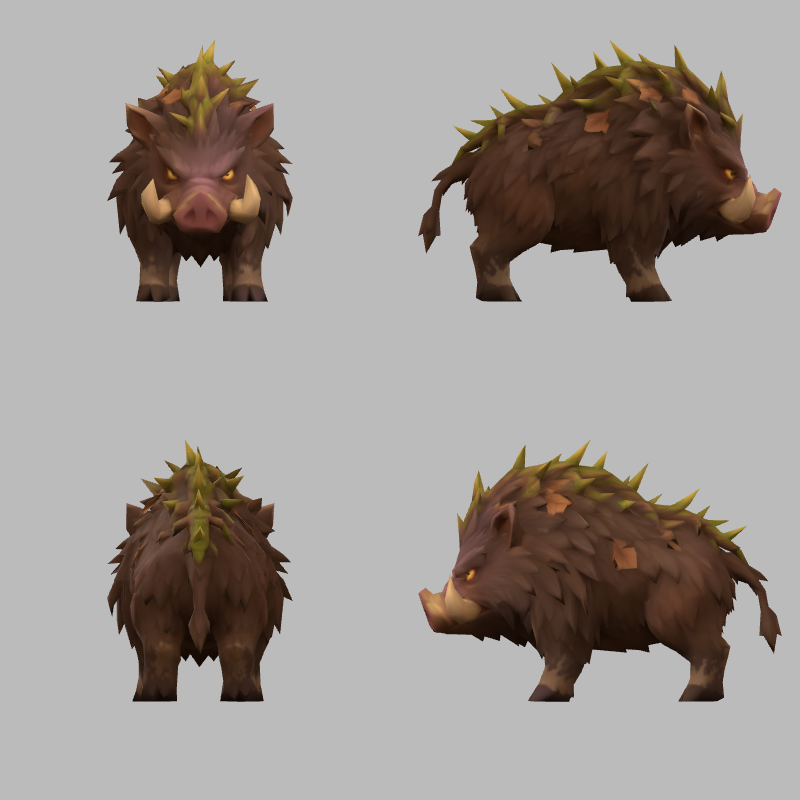

The first of the mobs: your export of the Level I rusher, with a four-legged skeleton and eight moves added by hand. The ears and the two-part tail swing on springs and the thorn crest stands up like hackles when he charges. His run speed and his three-hit gore use the game's numbers frame for frame. Pick a move, drag to turn him, and judge the weight and the hit. Nothing in the game has changed.
Idle or Run sets what he does between attacks, and Going turns him on the spot. Gore plays over it and repeats until you press it again. Hurt plays on top of anything. Death holds him down: press it again and he spawns back in. The bar names the part of the move that is playing.

He came through whole: four separate legs with cloven hooves, both tusks, the snout, both ears, the olive thorn crest down the spine and the tufted tail. The tusks, the eyes and the snout ride the head bone as one piece so they never stretch.
| Move | What he does | Timing |
|---|---|---|
| Idle | Two slow breaths with a huff on each, a look left then right with the ears turning first, an ear flick on each side, the tail swishing. Near the end he drops his snout to root and snuffle at the floor and paws it once with his right forehoof. | 6 s loop |
| Run | The game's trot: diagonal pairs (left fore with right hind), head low and thrust forward, ears laid back, tail up, the thorn crest half raised. The back rocks and the shoulders roll. | Game: 2.0 u/s. A third of a second a cycle. |
| Turn left, turn right | Short quick steps round on the spot, head leading, tail swinging out. | 225° a second (my number: the game turns him instantly). 0.4 s a cycle. |
| Gore | Three hits on a hero who stays in reach. A hook with the right tusk that comes with no wind-up, a backhand hook the other way, then a toss: the head drops and drives up, rearing him so the front hooves leave the floor. On each hit the front hooves step in, the head kicks on the contact frame and snaps back, and he holds the next wind-up until the bite is ready again. The ears pin, the crest stands and the tail goes up for the whole combo. | Game: a bite every 0.8 s per hero. Contacts at 2.5 frames, 0.8 s and 1.6 s; strike 2.5 frames, contact 2, snap 2.5, settle 5; the wind-up pulls back 4 frames before a strike; the hooves step in 0.16 u to land on the contact. Recover 0.35 s. 3.1 s in all. |
| Hurt | The head snaps away, the ears pin, the crest bristles and the tail tucks. Plays on top of any move, so planted hooves stay planted. | 0.4 s |
| Spawn | Grows from the floor low and nose down, comes up, shakes his head hard, snorts with the crest flaring, and stands. | Game: grow in 7 frames, about 10% over, then stand. The shake and the snort are mine. |
| Death | A squeal with the head thrown up. The forelegs buckle, he rolls onto his left side, the legs kick a few times and go still. The crest sags and the ears fall. | 2.2 s, then he stays down |
| What was measured, on every frame of every move | Result |
|---|---|
| A planted hoof moving on the floor (locked feet) | 0 mm in every move |
| A planted hoof its leg could not reach | 16 mm at worst |
| Loops that jump when they restart (idle, run, both turns) | 0 |
| Lowest point of the body under the floor | 20 mm at worst, the rim of a hoof as it rolls. Lying dead he is on the floor, not in it. |
| Ears, tail and thorn crest | The ears and the tail run as springs: they trail the body and settle after it stops. Only the thorns ride the crest bones, so the hide under them does not lift. |
These numbers come from the model file. I checked the poses as still frames only: the cloud machine cannot play the page at full speed, so the weight, the timing and the hit are yours to judge.